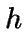
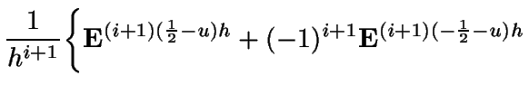

- 2.1 The Shift Operator
- 2.2 The Discrete Derivative
- 2.3 Higher Order Derivatives
- 2.4 Theorems involving the Discrete Derivative
- 2.5 Some Standard Discrete Derivatives
2. The Discrete Derivative
The Discrete Derivative is fundamental in the theory of Discrete Calculus. But before we introduce it, it helps to first introduce the Shift Operator. The Shift Operator is present in the definition of the Discrete Derivative, and will play a central part in simplifying many proofs involving the Discrete Derivative.
2.1 The Shift Operator
So, in simple terms, all that the operator does is offset the input variable of the function that it operates on.
2.1.1 Properties of the Shifting Operator
The following property (Property 2.2) will simplify later proofs.
Now that we have proved all of the necessary properties of the Shifting Operator, we can move on and define the Discrete Derivative. We will use the information that we have gathered about the Shifting Operator to prove further properties of the Discrete Derivative.
2.2 The Discrete Derivative
Certain conditions need to be placed on any function that is to be discretely differentiated or integrated. For the sake of simplicity, I will only consider defining the Discrete Derivative on analytic functions. This does not mean that it is of little worth to consider other types of functions.
In the same way that the derivative in Continuous Calculus can be considered as an operator, so too can the Discrete Derivative.
Let us remind ourselves how the Continuous Derivative is defined on a function .
Consider a function together with a constant . Define by
If
exists (and is the same for all
limiting sequences of ) then we call it the derivative of
with respect to  and write
and write
| (2.2) |
To formulate Discrete Calculus we suspend this last stage of taking a limiting value of . Instead we leave as an additional variable in the system. Consider defining the Discrete Derivative of as .
We shall see that defining by

gives us exactly the same continuous derivative when the limit of is taken.
In fact it is generally true, as we shall see later, that the continuous derivative is unaffected if we define as
| (2.4) |
for any .
So, for example, (2.1) is achieved by letting and (2.3) is achieved by letting .
Using this more general definition, we have a whole family of
Discrete Derivatives of for all possible combinations of
values for and . And as required, when a limiting
value of is taken, is equal to the
continuous derivative at  .
.
There is one final adjustment to make. It makes sense to try to
remove any bias that might exist in the offset. When we
see that we are taking a right-sided derivative, and when
we have a left-sided derivative. By using
instead
of we will now have an unbiased variable  which when
equal to 0 corresponds to a `centered' derivative. Additionally,
when
which when
equal to 0 corresponds to a `centered' derivative. Additionally,
when
 and
the corresponding derivative is
`right-sided' and `left-sided' respectively.
and
the corresponding derivative is
`right-sided' and `left-sided' respectively.

- . If it exists,
There are some very important things to notice from the above definition:
- The Discrete Derivative of a function of one variable becomes a
function of three variables
 .
.
- For a given function , the Discrete Derivative can easily be formulated. This is the same as in Continuous Calculus. We will later see that this is not generally the case for Discrete Integrals.
2.2.1 Properties of the Discrete Derivative
Since is analytic, we can expand using a Taylor Expansion. i.e. such that
 |
Rearranging gives:
Giving
This proposition tells us that so long as we know what the
Discrete Derivative is when  , we can calculate the Discrete
Derivative for all other values of
, we can calculate the Discrete
Derivative for all other values of  . For example, with this
freedom in mind, tables of derivatives only need to include the
case
. For example, with this
freedom in mind, tables of derivatives only need to include the
case  .
.
For 

2.3 Higher Order Derivatives
Just as in Continuous Calculus, it is of interest to study higher order derivatives. By this I mean functions which are produced from the repeated act of some differential operator.
2.3.1 Properties of Higher Order Derivatives
Let be the statement above about .
Certainly holds by Proposition 2.5.
By hypothesis,
and so
giving
which completes the induction.
Let be the statement above about .
Certainly holds by Definition 2.3.
By hypothesis,
and so
|  | |||
 |
|||
giving
which completes the induction.
Let be the statement above about .
Certainly holds by Proposition 2.3.
By hypothesis,
and so
giving
which completes the induction.
Let be the statement above about .
Certainly holds by Proposition 2.6.
By hypothesis,
and so
giving
which completes the induction.
Let be the statement above about .
Certainly holds by Proposition 2.7.
By hypothesis,
and so

giving
which completes the induction.
We can supersede this proposition now with a more general one.
Let be the statement above about .
Certainly holds by Proposition 2.13.
By hypothesis,
and so
giving
which completes the induction.
2.4 Theorems involving the Discrete Derivative
There are a few theorems that can now be introduced.
 |
|||
introducing a change of variable ,
which gives (i). To get (ii), send to , and make use of Proposition 2.12. Then send
It seems reasonable to imagine that this should be the case, especially as is analytic, which imposes many constraints, but sadly I have not managed to prove this.
There are some interesting things to note from Theorem 2.1:
- The Taylor Expansion expands a function about a point in terms of its Continuous Derivatives, whereas the above expansions expand a function in terms of its more general Discrete Derivatives. The equations additionally hold for , since they then simply express Taylor's Theorem.
- We see the special values of
 and
in the derivatives above. This corresponds to
`right-sided' and `left-sided' derivatives respectively. This is
in contrast to the Discrete Integral whereby the values refer to
`left-sided' and `right-sided' integrals respectively.
and
in the derivatives above. This corresponds to
`right-sided' and `left-sided' derivatives respectively. This is
in contrast to the Discrete Integral whereby the values refer to
`left-sided' and `right-sided' integrals respectively.
by Taylor Expansion. Similarly
Hence
This expression simplifies considerably for the three special
cases of
 . Here are the expansions for
these cases:
. Here are the expansions for
these cases:
That just about rounds up all we need to say about the Discrete Derivative for now. To finish up, we shall take a look at some common Discrete Derivatives.
2.5 Some Standard Discrete Derivatives
We have talked about Discrete Derivatives in some depth now, and
so here I shall introduce a few common ones. Please note that in
the following tables I have only tabulated the Discrete Derivative
with  . This is all that is needed since the more general
derivative can be found by substituting
. This is all that is needed since the more general
derivative can be found by substituting  with (see
Proposition 2.4).
with (see
Proposition 2.4).